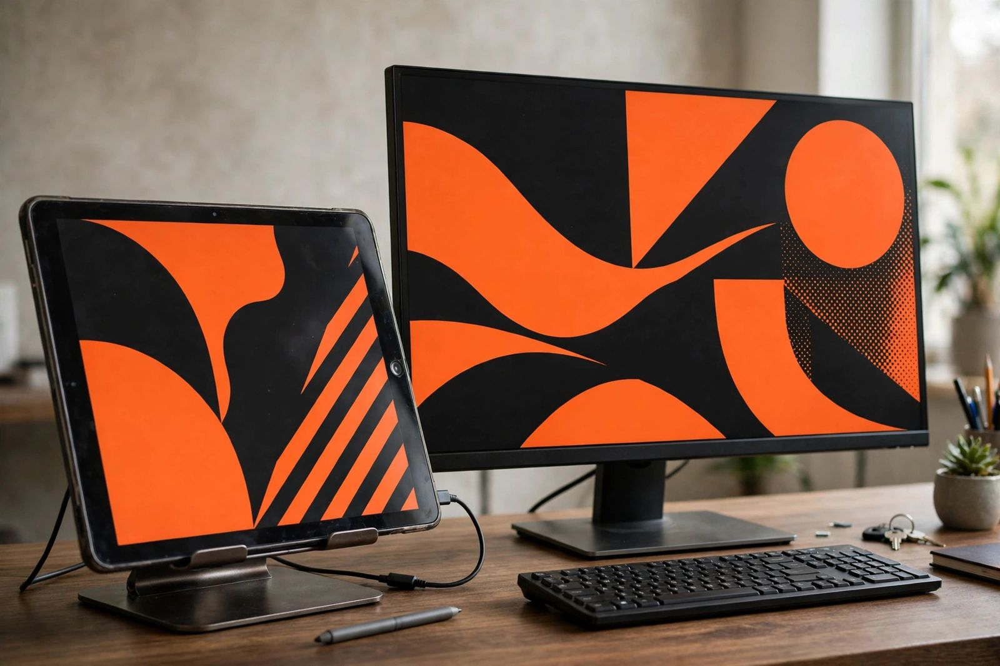

Turn an old tablet into a second monitor: wired, Wi-Fi and the Extend test

An old tablet can be a genuine second monitor, with its own desktop space that windows can be dragged onto, and the conversion is usually free. The catch is that the tablet almost never works as a monitor by being plugged into one. There is no HDMI input hiding on a tablet; the screen gets its picture from software, a viewer app on the tablet talking to a display driver on the computer over Wi-Fi, a cable, or the local network. So the honest verdict splits in two. As a screen for chat, reference pages, calendars, music controls and dashboards, a retired tablet is excellent value at zero dollars. As a screen for fast games, smooth full screen video, or colour critical work, it is the wrong tool, and no app changes that. Everything below is about landing in the first group on purpose.
Triage: can this tablet run any method?
Run four checks before installing anything. A failure on the first check ends the project; the other three pick the method.
- Battery and boot. The tablet must boot reliably and hold a session without surprises. Never press a device with a swollen, damaged or unusually hot battery into desk duty; that device goes to recycling, not to a stand beside a monitor.
- Operating system floor. Floors differ sharply by method. The current spacedesk requirements list Android above 5.0, iOS above 9.3, and a Windows 10 or 11 computer, which reaches genuinely old hardware. Apple Sidecar is far stricter: iPadOS 13 or later, and only on listed families, iPad Pro, iPad 6th generation or later, iPad mini 5th generation or later, and iPad Air 3rd generation or later, paired with a compatible Mac on macOS Catalina 10.15 or later. A tablet too old for its maker route may still clear the spacedesk floor, which is why the floors get checked before the device gets written off.
- Cable honesty. A wired setup needs a data cable. A charge only cable will power the tablet happily and transmit no display at all, and it is the single most common reason a wired attempt appears to do nothing. If the cable drawer holds five identical looking leads, test each one against a file transfer before blaming the software.
- Desk practicalities. A stand, a charger, ventilation, and a screen timeout set long enough to stop the display sleeping mid task. A second monitor that locks itself every two minutes is a ornament, not a tool.
Methods side by side
| Computer and tablet | Starting method | Connection | Cost shape |
|---|---|---|---|
| Windows 10 or 11 with an Android tablet | spacedesk | Wi-Fi, USB tethering, Ethernet, or a compatible wired link | Free |
| Windows 10 or 11 with an iPad | spacedesk or Duet | Network or USB, depending on the app | Free route exists; Duet is paid |
| Mac with a compatible iPad | Apple Sidecar, built in | Wireless or USB | Free, no install |
| Mac with an Android tablet or an unsupported iPad | Third party software such as Duet | Usually USB or network | Paid |
| Any computer, tablet with only a working browser | Deskreen | Local network | Free; may mirror rather than extend unless a virtual display is created |
A pricing caution belongs beside the table. Published Duet pricing conflicts between listings, with one comparison listing it from $4 per month and another on the same page putting a subscription at $28 per year. Treat both as stale until the app store page for the actual device confirms a current figure. The free routes need no such caution, which is one more reason they go first.
Connection choice follows a reliability order documented by spacedesk itself: direct Ethernet is the most predictable connection, ordinary Wi-Fi through a router or access point is the most exposed to congestion and interference, and USB tethering or USB to Ethernet sit between the two as useful compromises. For a tablet that will hold reference material all day, any of them works. For a tablet expected to track a busy screen, move down the list toward wire.
Setup: spacedesk on Windows, in order
- Install the driver on the computer. Download the spacedesk Windows Primary Machine software from the official site and install it, restarting Windows if the installer asks. The computer also needs permission to install a display driver, and possibly administrator access and a firewall allowance. Check: the spacedesk console on the computer reports the driver running.
- Install the viewer on the tablet. Install the spacedesk Viewer app from the official app store for the tablet platform. Check: the viewer opens without an operating system complaint, which retests the floor from the triage step.
- Join the same connection. Put both devices on the same Wi-Fi network, or connect by USB tethering or Ethernet. Internet access is not required when the devices can reach each other locally. Check: the viewer lists the Windows computer; if automatic discovery fails, enter the computer local IP address manually where the app offers it.
- Connect, then set Extend. Select the computer in the viewer. On Windows, open Settings, then System, then Display. Set the multiple displays option to Extend these displays, not Duplicate. Check: the tablet appears as Display 2 in the diagram.
- Arrange and load the right window. Use Identify, then drag the display rectangles until they match the physical desk layout. Drag a low priority window onto the tablet: chat, email, a calendar, documentation, a music player, a monitoring dashboard. Check: the window lives on the tablet and the mouse crosses the boundary in the direction the desk suggests.
What success looks like: the Extend test
Success has a precise definition here, and it is worth insisting on, because three different setups get casually called a second screen. Extend means the computer gains desktop space and a window can be dragged across, which is a real second monitor. Duplicate or mirror shows the same picture twice and adds no workspace. Remote desktop hands control of the computer to the tablet session without necessarily registering a separate display at all. Browser sharing can be mirroring in disguise unless a virtual display is also created.
The test takes ten seconds. Open display settings. If the tablet appears as Display 2 and Extend can be selected, the conversion worked. If every screen shows the same image, the setup is a mirror, which may still suit presentations, but should be filed under its real name so nobody plans a workday around screen space that does not exist. Sidecar users get the same choice at connection time, extend or mirror, and the same test applies. One Sidecar distinction saves confusion in mixed households: Sidecar extends the Mac display onto the iPad, while Universal Control merely lets one keyboard and pointer operate a separate iPad running its own apps. Only the first one is a monitor.
The decision, by device
Old Android tablet, Windows desk: start with spacedesk, free, over the most wired connection available. This is the highest success route for the oldest hardware, given the Android above 5.0 floor.
Listed iPad, Mac desk: use Sidecar and spend nothing. Keep the devices on the same Apple Account for wireless use, stay within about 10 metres, and use USB when stability matters more than tidiness.
Unlisted iPad or Android tablet, Mac desk: check a third party tool requirements before paying, because USB behaviour, operating system support and true virtual display support vary by version. The triage floors, not the marketing, decide.
Tablet that fails every floor, or fails the battery check: give it a job with no display driver in it, a kitchen display, an e-reader conversion, a photo frame, or recycle it responsibly if the battery has failed. A second monitor is a good second job. It is not the only one, and forcing it onto hardware below the floor produces a flickering reminder of the attempt rather than a tool.
— Dex Carter, Tech Writer